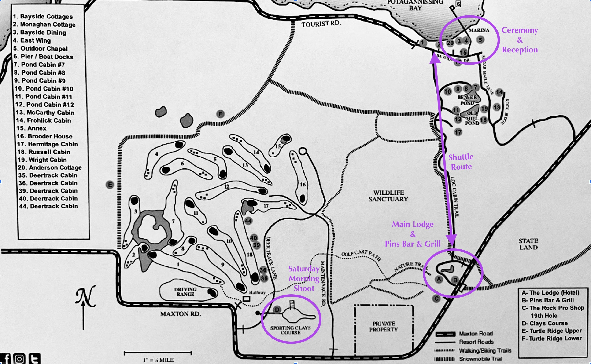

We're getting married on Drummond Island, Michigan! It's a beautiful place, but it's a bit remote. Here's how to get there:
Vintage-romance, semi-formal.
Ladies can wear dresses (any length, no white), skirts with sweaters, or chic pant suits.
Gents should opt for suits or dress pants with sport coats—ties are optional.
Check out this lovely inspiration board.
It will be late fall in Northern Michigan and the ceremony is outdoors (unless it rains). Check the weather ahead of time and dress accordingly!
8:30 pm • Hang out, euchre, bonfire (nothing formal) @ Pins Bar & Grill (Located at the resort)
tbd am • Sporting clays in the morning with the men.
4:20 pm • Ceremony @ Chapel in the Woods
5:00 pm • Reception @ Bayside Dining
The venue is 1 mile down a private road from the Main Lodge. There’s ample parking, walking is welcome, the resort has bikes, and we plan to run a shuttle for a few hours before and after the wedding.

Your presence is presents enough! We are so grateful for the time and resources you're spending to come celebrate with us, there's no need to give us any gifts. However, if you'd like to leave us a note and contribute to the honeymoon, there will be a small table and box at the reception!
Resort rooms & cabins are pet-friendly. Let the resort know when making your reservation. Pet sitters on the island: Scott Ellis (231-881-7450) and LCI Pet Resort (906-484-2194). Kindly refrain from bringing pets to the ceremony or reception.